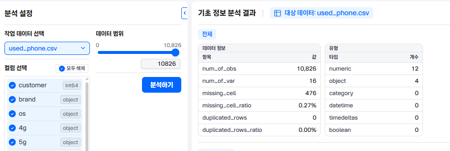
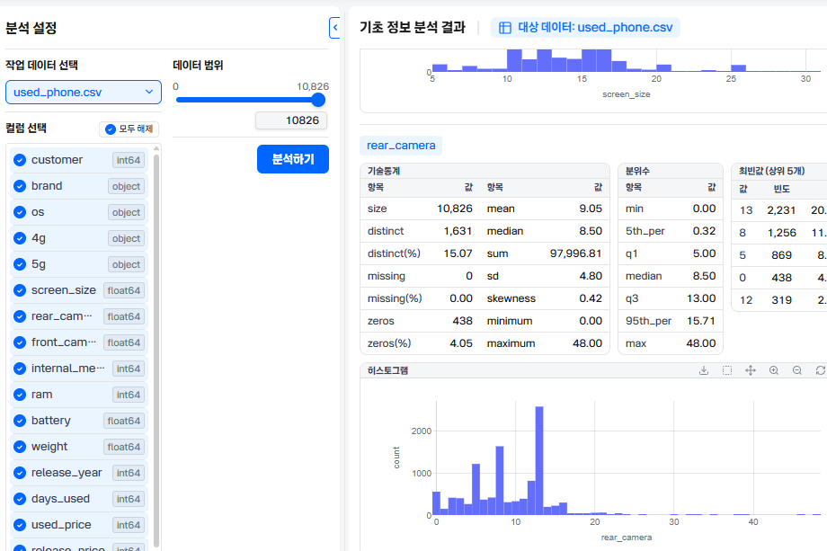
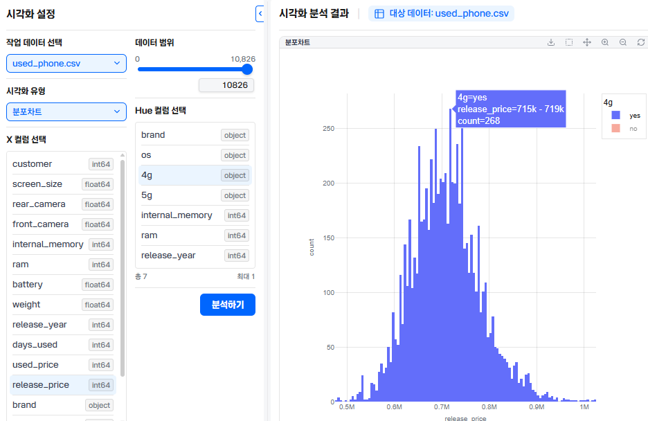
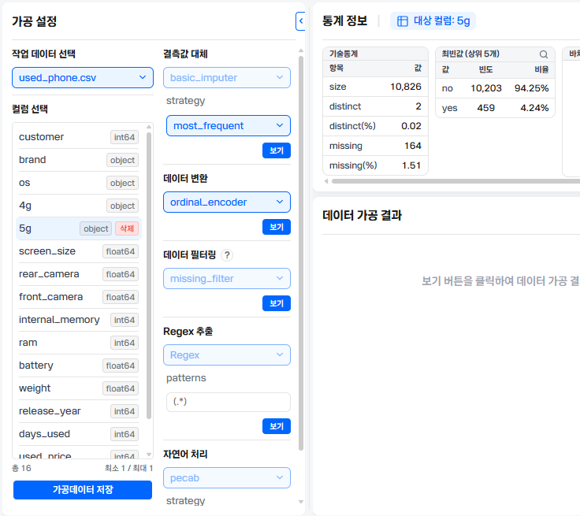
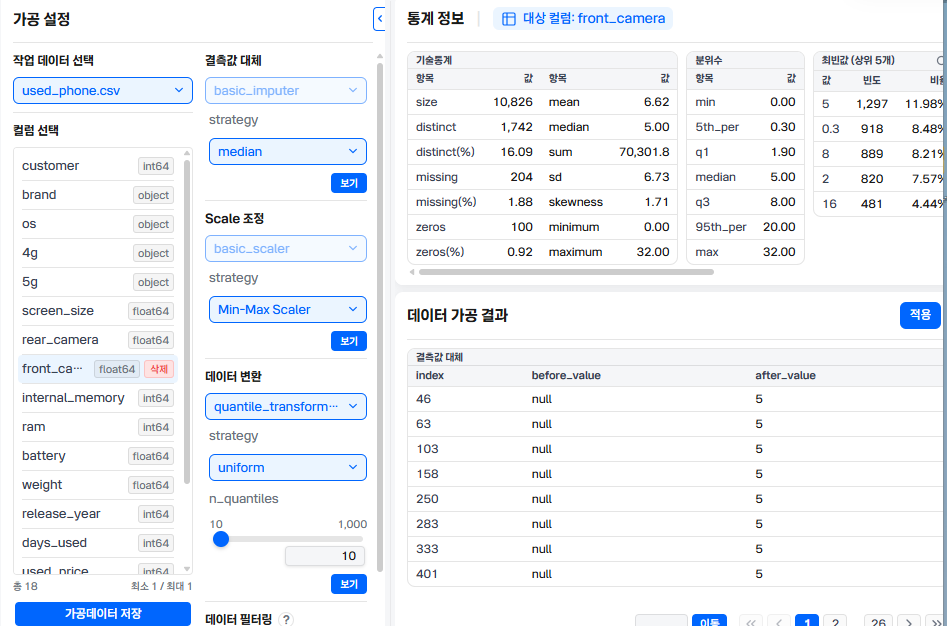
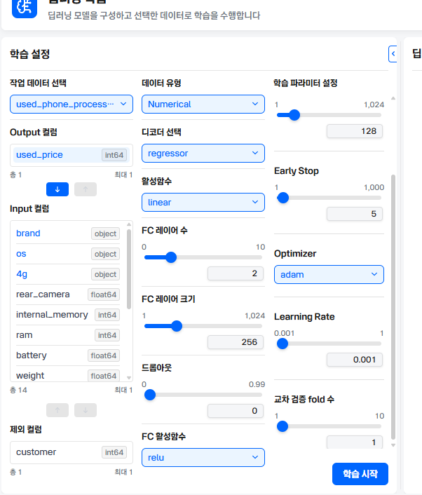
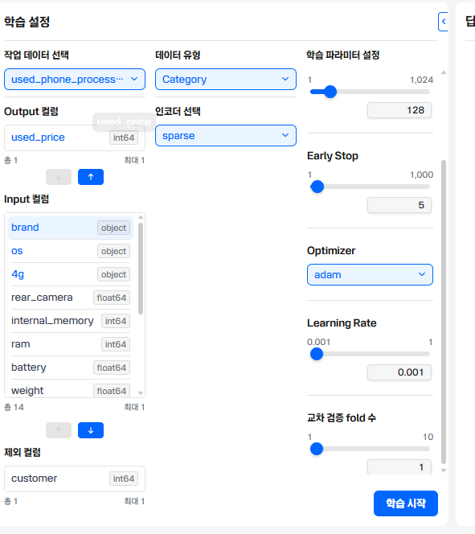
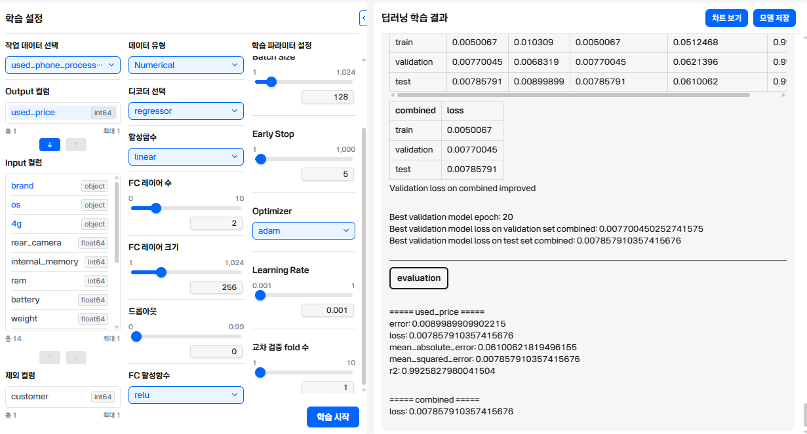
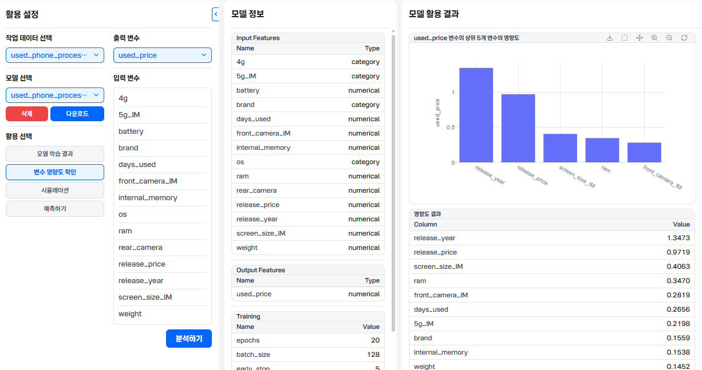

문제 정의 (Problem Definition)
목표: 중고 모바일 기기 거래 플랫폼 A사는 합리적인 중고 거래를 위해 모바일기기 데이터를 이용하여 모바일 기기 중고가를 예측하고자 한다.
타겟변수:중고기기가격(used_price)
| 고객ID(customer) | 기기브랜드(brand) |
| 운영체제(os) | 4G(4g) |
| 5G(5g) | 스크린기기(Screen_size) |
| 후면카메라해상도(rear_camera) | 전면카메라해상도(front_camera) |
| 내장메모리(internal_memory) | 램(ram) |
| 배터리(battery) | 무게(weight) |
| 출시년도(release_year) | 사용일수(days_used) |
| 중고기기가격(used_price) | 구매가격(release_price) |
데이터 가져오기 (Data Loading)
실습에 사용할 정제된 모바일 중고기기 데이터를 불러옵니다.
기초 정보 분석 (EDA - Summary)
데이터의 전체 크기, 결측치 유무, 데이터 타입 및 기술통계량을 확인합니다.
[문항1] 종소변수(output 칼럼)란 독립변수(input컬럼)를 바탕으로 예측하는 대상을 의미한다. 다음주 이 과제를 해결하는 데 필요한 종속 변수를 고르시오
- 기기브랜드(brand)
- 중고기기가격(used_price)
- 기기브랜드(release_price)
- 기기브랜드(release_year)
입력:
[문항2] 데이터의 전체 개수(observation)을 작성하시오 [데이터분석/기초정보분석]메뉴를 활용하시오
입력:

[문항3]후면카메라해상도(rear_camera)의 중앙값(median)을 작성하시오[데이터분석/기초정보분석]
입력:

시각화 분석 (Data Visualization)
[문항4]4G가 내장된 휴대폰의 구매가격(release_price)의 계급구간중 빈도수(frequency)가 가장 높은 구간을 고르시오 [데이터분석/기초정보분석]
범례를 클릭하면 원하는 범례만 확인 가능합니다.
- 650k-654k
- 685k-689k
- 715k-719k
- 740k-744k
입력:

데이터 가공 (Data Preprocessing)
데이터의 성격 (연속형 vs 범주형)
[문항5]모든 변수의 결측치(missing cells)를 다음 가이드에 따라 처리한후, 전면카메라해상도(front_camera)의 결측치(missing cells)를 대체하는 값을 작성하시오.
- 종속변수를 제외한 모든 변수의 결측치(missing cells)를 처리하시오
- 수치형 데이터로 구성된 변수는 중앙값(median)으로 대체하시오
- 범주형 데이터로 구성된 변수는 최빈값(most_frequent)으로 대체하시오
- 수행후 기존 변수는 삭제하고 [가공데이터 저장]을 클릭하여 가공된 데이터를 저장하시오
입력:


딥러닝 학습 (Deep Learning Training)
인공신경망(MLP) 모델의 하이퍼파라미터를 설정하고 학습을 시작합니다.
[문항6]다음 가이드에 따라 딥러닝 모델을 학습하고, 해당 모델의 평균제곱오차(MSE)를 작성하시오[AI모델 학습]
- 작업 데이터 선택 : 문항5에서 처리한 데이터를 사용하시오
- INPUT 칼럼 :
- 고객 ID(customer)는 제외칼럼으로 지정하시오
- 범주형 변수는 데이터 인코더를 sparse로 설정하시오
- Output 칼럼 : 종속변수를 Output 칼럼으로 설정하시오
- 컬럼 Parameter 설정:
- 데이터 유형은 모델 유형에 맞게 설정하시오
- FC 레이어수:2, FC레이어크기:256, 드롭아웃:0, 활성함수:relu
- 학습 Parameter 설정: Epochs:20, Batch Size:128, Early Stop:5, Optimizer:adam, Learning Rate:0.001
- 답안작성 :
- 모델 학습후 오른쪽 상단의 [모델저장]기능을 통해 모델을 저장하시오
- 정답 작성은 반올림하여 소숫점넷째자리까지 작성하시오
r2:



변수 영향도 확인 (Feature Importance)
[문항7]문항6에서 학습한 딥러닝 모델 분석 결과, 중고기기가격(used_price)을 결정하는데 가장 중요한 요소를 고르시오[AI모델활용]
- 내장메모리(internal_memory)
- 사용일수(days_used)
- 출시년도(release_year)
- 구매가격(release_price)
